ব্যক্তিগত উন্নয়ন ও সামাজিক অগ্রগতির জন্য শিক্ষা একটি মূল পাথেয়। বিদ্যালয়ে অ্যাক্সেসিবল স্থাপত্য একটি মৌলিক অধিকার, যা নিশ্চিত করে যে প্রত্যেক ছাত্র-ছাত্রী শিক্ষা ও সামাজিক মিলনমেলায় বাধাবিহীনভাবে অংশ নিতে পারে
এই ভূমিকায় আমরা শিক্ষাগত পরিবেশে স্থাপত্যের নকশার প্রভাব এবং সমাজের অন্তর্ভুক্তি এবং অ্যাক্সেসিবিলিটি উপর গুরুত্ব অন্বেষণ করছি। দক্ষিণ এশিয়ার প্রেক্ষাপটে ভৌত বাধাগুলির চ্যালেঞ্জ এবং অ্যাক্সেসিবল স্থাপত্যিক পদ্ধতির পর্যালোচনা করা হয়েছে।
এই পৃষ্ঠার উদ্দেশ্য অভিযোগ করা নয়, বরং এই তথ্যটি যতটা সম্ভব অনেকের কাছে পৌঁছে দেওয়া যাতে যে কেউ আগ্রহী হলে সহজেই খুঁজে পড়তে পারে
Image taken from unicef.org
বিদ্যালয়ে ভৌত বাধাগুলি প্রতিবন্ধী ছাত্র-ছাত্রীদের অংশগ্রহণ ও শিক্ষায় গুরুত্বপূর্ণভাবে বাধা দেয়, যা অ্যাক্সেসের সীমাবদ্ধতা, বিচ্ছিন্নতা, নিরাপত্তা উদ্বেগ, কলঙ্ক ইত্যাদি দ্বারা প্রভাবিত হয়.
আমরা যে সমস্ত বাস্তবায়ন বা বাস্তবায়নের অভাব দেখতে পাই তা অর্থনৈতিক কারণগুলি, দক্ষতার অভাব অথবা জ্ঞানের অভাবের ফল। অ্যাক্সেসিবল স্থাপত্যের অভাবের পেছনে কিছু প্রধান কারণ হলঃ
Image reproduced from nafath.mada.org.qa
এই ওয়েবপেজের মাধ্যমে, আমরা বিদ্যালয়গুলিতে প্রচলিত স্থাপত্যিক বাধাগুলি চিহ্নিত করব এবং এগুলি অতিক্রম করার সমাধান ও কৌশল আলোচনা করব। এই বিষয়বস্তু যে কেউ যিনি অ্যাক্সেসিবল স্থাপত্য সম্পর্কে আরো জানতে আগ্রহী তাদের জন্য শিক্ষামূলক উদ্দেশ্যে প্রণীত।
দক্ষিণ এশিয়ায় অনেক ক্ষেত্রে বিদ্যালয়ের প্রবেশ বা প্রস্থান পথ কাদাযুক্ত হয় অথবা কোনো প্রকার বাধা থাকে। এই ধরনের পরিস্থিতিতে সিঁড়ি থাকলেও প্রবেশের জন্য র্যাম্প থাকে না। এটি প্রতিবন্ধী ছাত্র-ছাত্রীদের ভবনে প্রবেশে সমস্যা সৃষ্টি করে।
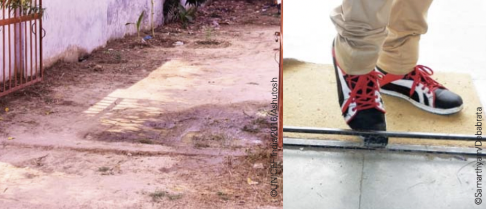Image collected from unicef.org
স্কুলগুলিকে নিশ্চিত করতে হবে যে প্রবেশ বা প্রস্থানের জন্য মজবুত এবং সমতল পৃষ্ঠ থাকবে। এটি নিশ্চিত করবে যে হুইলচেয়ার ব্যবহারকারী ছাত্র-ছাত্রীরা স্বাধীনভাবে স্কুলে প্রবেশ এবং বের হতে পারবে।
র্যাম্প সিঁড়ির বিকল্প হিসাবে প্রয়োজন। যেহেতু ছাত্র-ছাত্রীদের উপরে উঠতে হয়, অনেক ক্ষেত্রে র্যাম্প আটকে যাওয়া বা অপরিচ্ছন্ন র্যাম্পের সমস্যা থাকে
মাঝে মাঝে, র্যাম্পগুলি মৌলিক স্থাপত্য বা পদার্থবিজ্ঞানের নীতিগুলি বিবেচনা না করে ডিজাইন করা হয়। এটি প্রায়শই র্যাম্পটি যে উদ্দেশ্যে ডিজাইন করা হয়েছিল সেটি ব্যবহার করার সময় সমস্যা সৃষ্টি করে
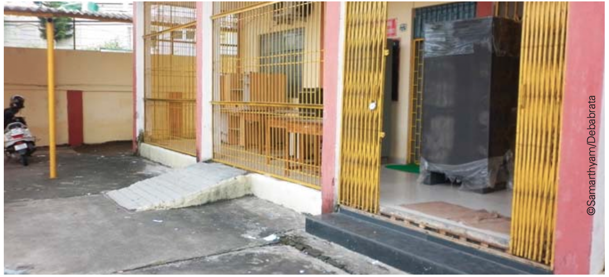Image reproduced from unicef.com
আমরা যদি খুব কাছ থেকে লক্ষ্য করি, অন্য প্রান্তে কিছু বস্তু রাখা হয়েছে যা র্যাম্প অ্যাক্সেস করাকে আরও কঠিন করে তুলতে পারে.
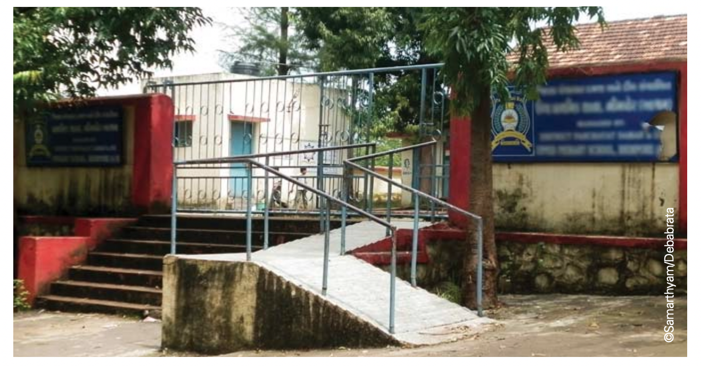Image reproduced from unicef.com
Image reproduced from unicef.com
আমরা একটি খুব খাড়া র্যাম্প লক্ষ্য করি, কিন্তু ডিজাইনার ঘর্ষণ বাড়ানোর জন্য খাঁজ যোগ করেছেন যা সম্ভবত সমস্যাটি সমাধান করবে না কারণ এটি র্যাম্প দিয়ে উঠতে গিয়ে অতিরিক্ত চ্যালেঞ্জ তৈরি করবে
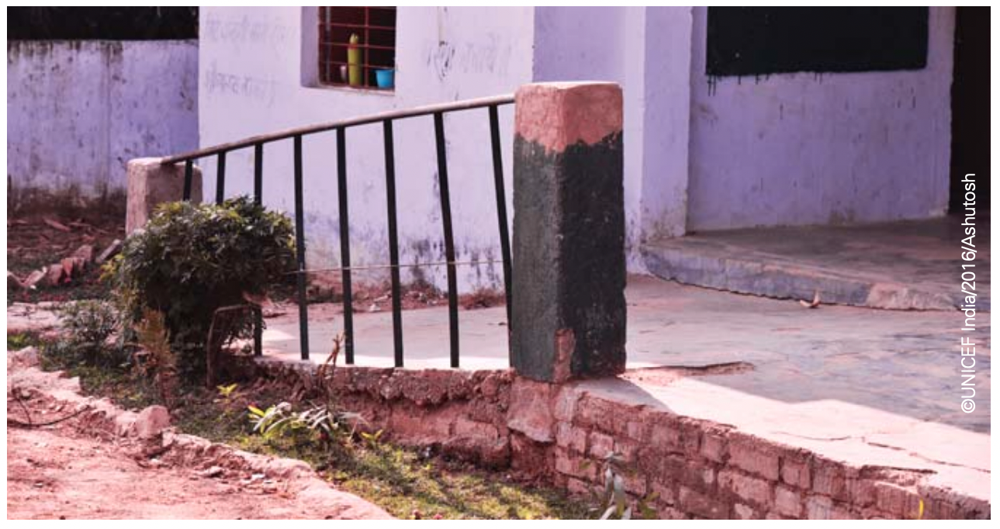এটি একটি ক্লাসিক উদাহরণ যেখানে একটি র্যাম্পের পৃষ্ঠ অপরিচ্ছন্ন এবং একই সময়ে আমরা দেখতে পাই যে র্যাম্পের পৃষ্ঠটি খুব মসৃণ যা সম্ভবত র্যাম্প দিয়ে উঠতে কঠিন করে তুলবে। উপরে উল্লিখিত র্যাম্পের অবকাঠামো যেমন হওয়া উচিত তার স্থাপত্যিক নমুনা নীচে দেওয়া হলো। র্যাম্পটি শক্ত এবং সমতল হওয়া উচিত, এবং এটি নিশ্চিত করা উচিত যে র্যাম্পের পৃষ্ঠে যথাযথ খাঁজ থাকবে এবং এটি সিঁড়ির পাশে থাকবে যাতে পথ অবরুদ্ধ না হয়।:
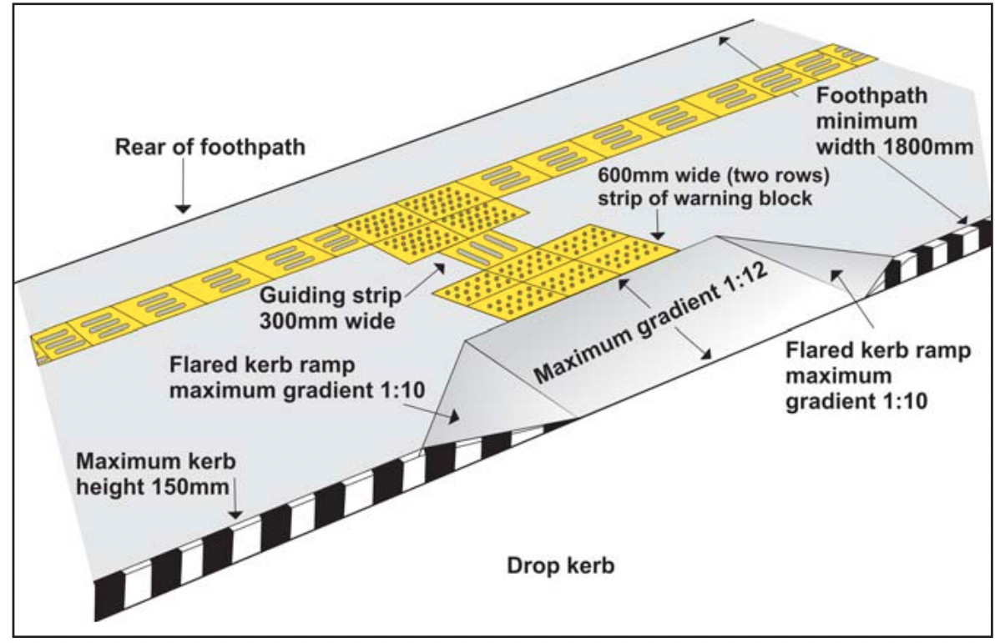Image reproduced from unicef.com
যেমন নীচে দেখানো হয়েছে, র্যাম্পের ঢাল বা ঢাল হওয়া উচিত নয়, যার ঢাল 1 থেকে 12 এর চেয়ে বেশি নয়।
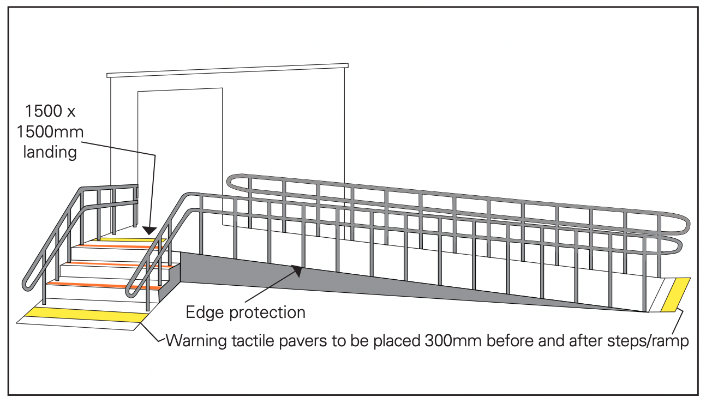Image reproduced from unicef.com
নীচে একটি উদাহরণ দেওয়া হলো যেমনটা একটি র্যাম্প দেখতে হবে যার পৃষ্ঠে যথাযথ ঘর্ষণ সুবিধা, রেলিংস এবং উপযুক্ত ঢাল রয়েছে:
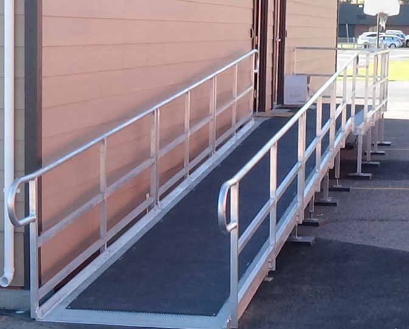Image collected form safeguardtechnology website
বিদ্যালয়গুলিতে এবং অন্যান্য স্থানে অনেক ক্ষেত্রে সিঁড়িগুলি প্রায়ই খারাপভাবে বজায় রাখা হয়। এটি সম্ভবত রক্ষণাবেক্ষণের জন্য অর্থের অভাবের কারণে ঘটে। এটি দৃষ্টিহীন ছাত্র-ছাত্রীদের বা যাদের আঘাত আছে তাদের জন্য একটি অতিরিক্ত সমস্যার স্তর যোগ করে
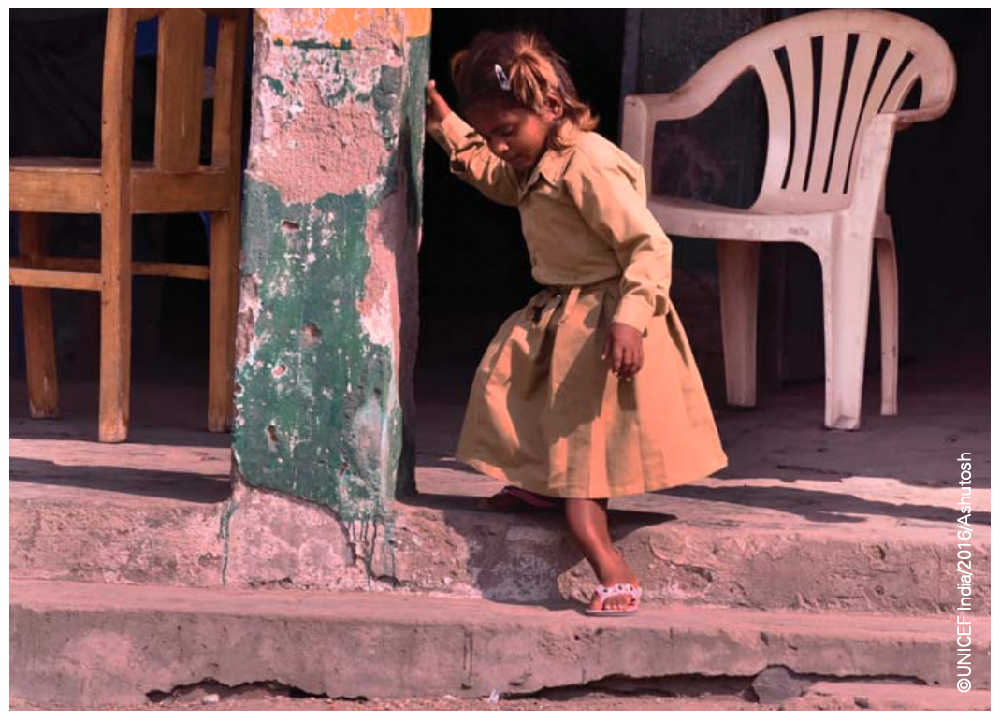নীচে একটি উদাহরণ দেওয়া হলো যেমনটা এটি ডিজাইন করা উচিত স্ট্রাইপ বা রঙের ব্যবহার দিয়ে কন্ট্রাস্ট দেখানো এবং সিঁড়িতে অতিরিক্ত ঘর্ষণ খাঁজ যোগ করা উচিত যাতে পিছলে যাওয়ার সম্ভাবনা কম থাকে.
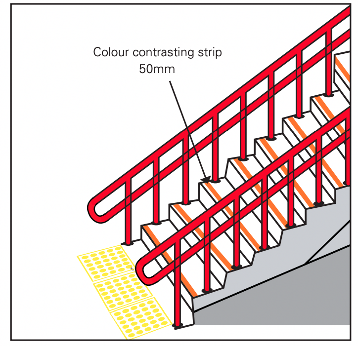 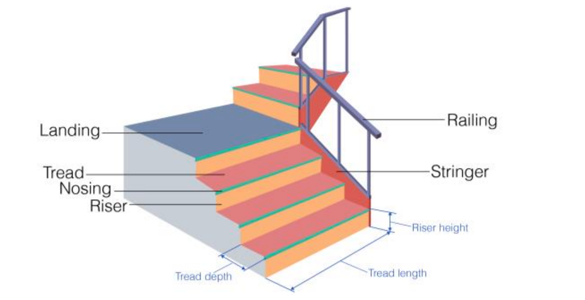Image collected from https://www.researchgate.net/publication/328186924
নীচে একটি উদাহরণ দেওয়া হলো যেমনটা সিঁড়ি সঠিকভাবে ডিজাইন করা হলে দেখতে লাগে
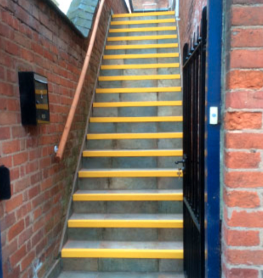Image collected from https://safetread.co.uk
দক্ষিণ এশিয়ার বিদ্যালয়গুলিতে প্রায় সাইনেজের অভাব রয়েছে। এটি বিদ্যালয়গুলি বড় হলে ছাত্র-ছাত্রীদের নেভিগেট করার ক্ষেত্রে কঠিন করে তোলে। ফলে, প্রায় 1000mm উচ্চতায় সঠিক মাথার স্পেসে সাইন ইনস্টল করার এবং কন্ট্রাস্টিং রঙের ব্যবহার বিবেচনা করা গুরুত্বপূর্ণ।
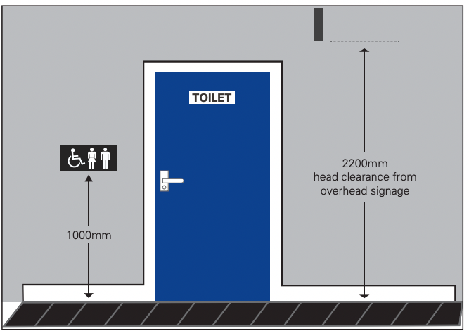Image collected from unicef.com
যথাযথ এবং প্রশস্ত দরজা ডিজাইন করা খুব জরুরি যাতে ক্লাসরুম বা সুবিধাগুলি সবার জন্য অ্যাক্সেসযোগ্য হয়। ব্যক্তিগত অভিজ্ঞতা থেকে, আমি লক্ষ্য করেছি যে দরজার নীচে বৃষ্টির জল আটকে রাখার জন্য কিছু বাধা থাকে। এটি ছাত্র-ছাত্রীদের ক্লাসরুমে প্রবেশে সমস্যা সৃষ্টি করতে পারে।
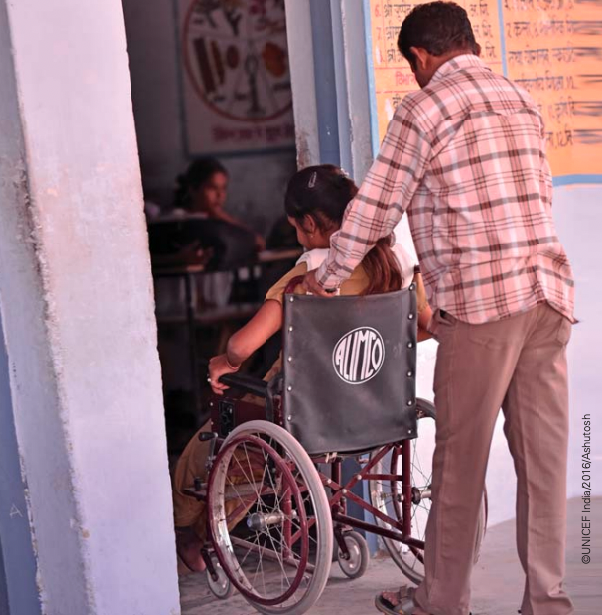একটি যথাযথ দরজা ডিজাইন হল এমন একটি যা একটি D হ্যান্ডেল, কিক প্লেট থাকে, এবং দরজা দিয়ে ভিতরটা দেখা যায়। এছাড়াও, একটি অটোম্যাটিক দরজা ওপেনার যোগ করা অ্যাক্সেসিবিলিটি ইস্যুগুলি অনেক উন্নত করতে পারে।
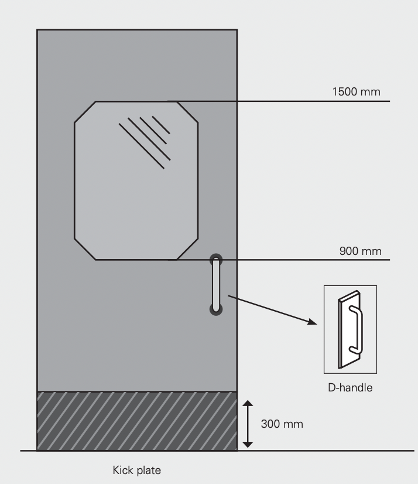Image collected from https://www.automaticdoorsauburn.com/
অনেক ক্ষেত্রে, ক্লাসরুমে প্রায়ই মৌলিক ক্লাসরুম সরঞ্জামের অভাব থাকে যা বিবেচনা করা প্রয়োজন। অধিকাংশ ক্ষেত্রে, এটি অর্থের অভাবের কারণে ঘটে, তবুও প্রয়োজনীয় ডিজাইন বিবেচনা করা উচিত।
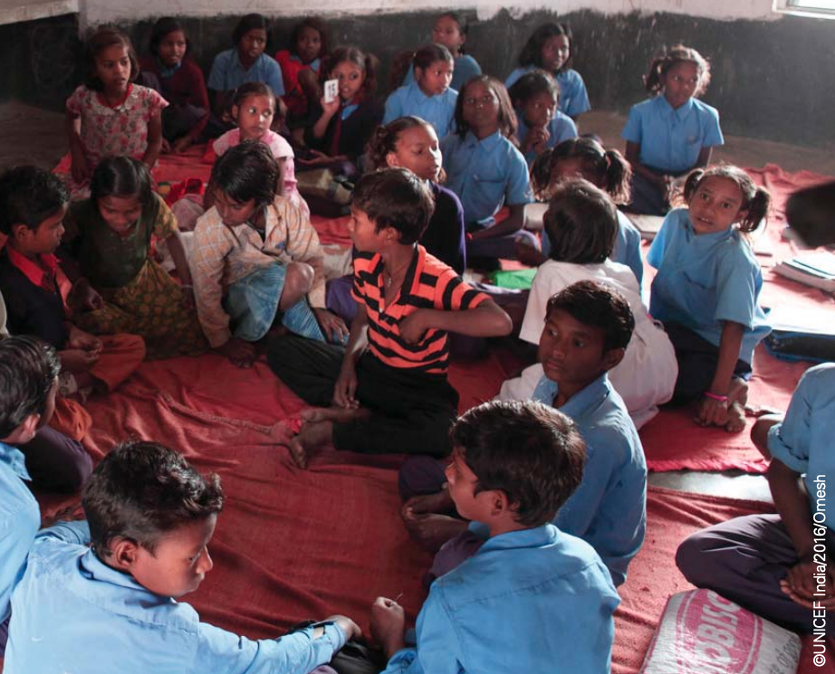শুধুমাত্র একরূপ বেঞ্চ না থাকা উচিত, বরং যাদের প্রয়োজন তাদের জন্য বিশেষ বেঞ্চ থাকা উচিত। যদিও এটি অর্থনৈতিকভাবে কঠিন সিদ্ধান্ত নয়। যতক্ষণ কর্তৃপক্ষ এটি করতে ইচ্ছুক থাকবে, ততক্ষণ এটি সম্ভব।
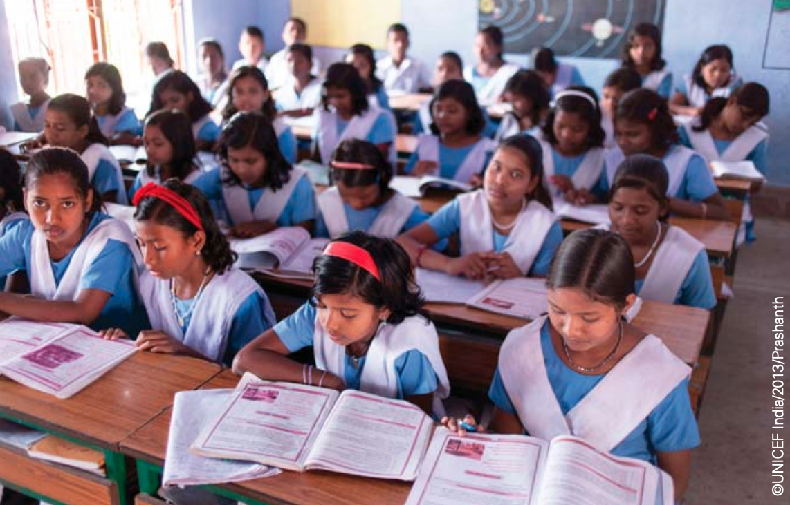ডেস্কগুলিকে আরও অ্যাক্সেসিবল করার জন্য, ডিজাইনাররা উচ্চ বা সামঞ্জস্যযোগ্য বেঞ্চ অর্ডার করতে পারেন। এবং কিছু সারি বা কিছু অংশ বেশি জায়গা সহ রাখতে পারেন।
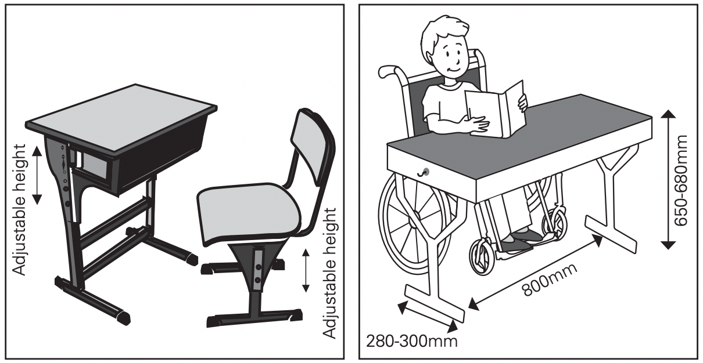অনেক ক্ষেত्रে, আমি খুবই খারাপভাবে বজায় রাখা মেঝে দেখেছি, যা আমি বাংলাদেশে আমার দিনগুলিতে লক্ষ্য করেছি। এমন খারাপ বজায় রাখা খুবই বিপজ্জনক হতে পারে।
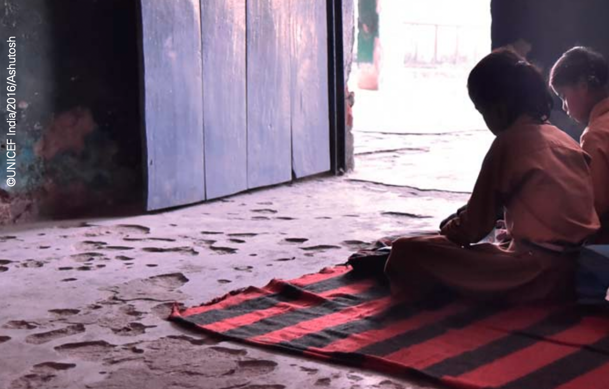 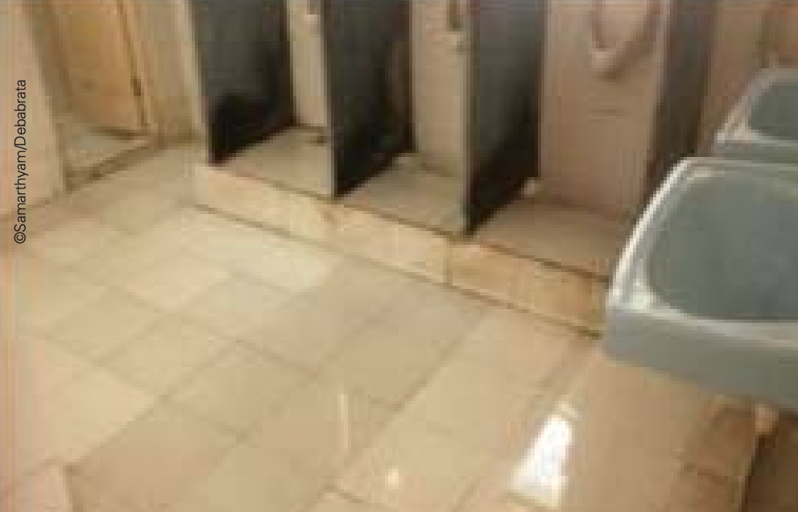খেলার মাঠ শিশুদের জন্য সামাজিকীকরণ ও বিরতির জন্য খুব গুরুত্বপূর্ণ স্থান। এই ধরনের স্থানগুলিকে উন্নত করার জন্য কয়েকটি খুবই সহজ বিষয় বিবেচনা করা দরকার।
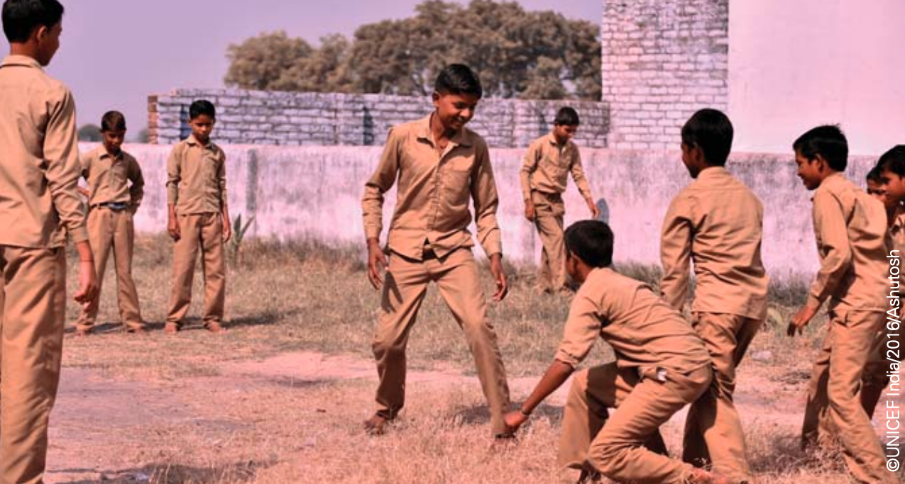খেলার মাঠটি স্কুল থেকে খেলার মাঠে পৌঁছানোর জন্য একটি পাকা পথ যোগ করে, যদি স্তরে পার্থক্য থাকে তবে র্যাম্প যোগ করে, এবং নিশ্চিত করা দরকার যে যথেষ্ট ঘাস থাকবে যাতে শিশুরা আঘাত পাওয়ার সম্ভাবনা কম থাকে।
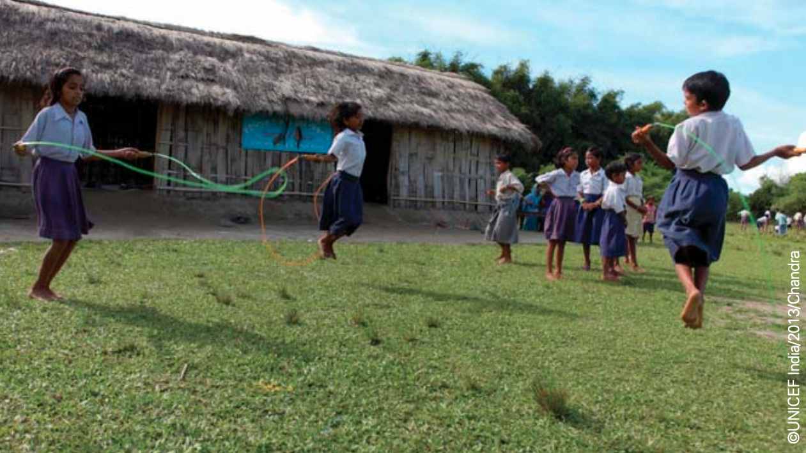অপরিচ্ছন্ন টয়লেট এবং যথাযথ ডিজাইন ছাড়াই টয়লেটগুলি প্রতিবন্ধী ছাত্র-ছাত্রীদের জন্য অ্যাক্সেসযোগ্য হয় না।
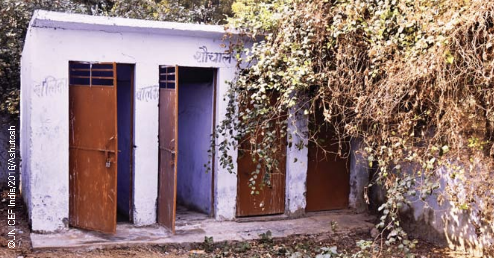 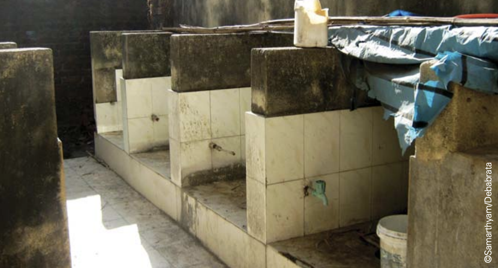টয়লেটগুলিকে অ্যাক্সেসযোগ্য করার জন্য, পশ্চিমা টয়লেটগুলি ইনস্টল করা এবং হ্যান্ডলগুলি যথাযথভাবে ইনস্টল করা প্রয়োজন।
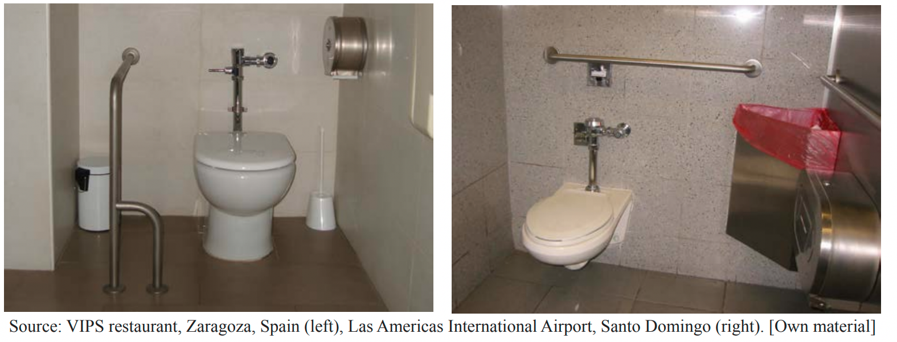নীচে কিছু উদাহরণ দেওয়া হলো যেমনটা টয়লেটগুলি অ্যাক্সেসযোগ্যভাবে ডিজাইন করা উচিত।
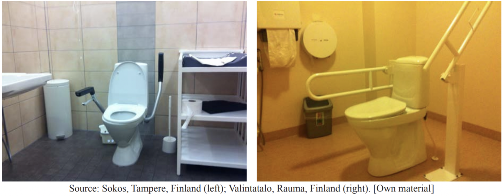পানির অবকাঠামোর দিকে মনোযোগ দেওয়া অত্যন্ত জরুরি যাতে সকল ছাত্র-ছাত্রীরা পানি পাবে। এর জন্য পানি সরবরাহের উপযুক্ত সুবিধা থাকা প্রয়োজন।
নীচে দক্ষিণ এশিয়ার অনেক স্কুলের বর্তমান পানির অবস্থার একটি উদাহরণ দেওয়া হল, দুর্ভাগ্যক্রমে বেসিনের অভাবে, পানি পানের স্থানটি পিছল হয়ে গেছে যা চোটের ঝুঁকি সৃষ্টি করে।
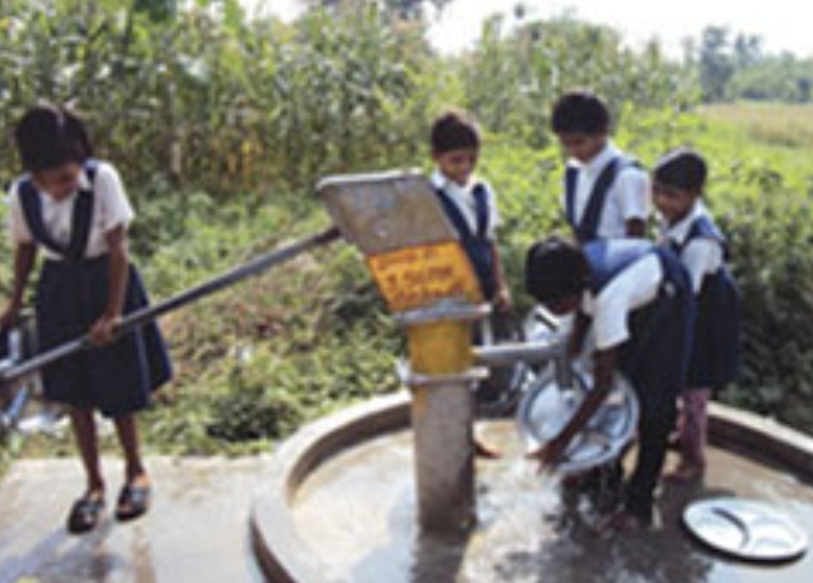Reproduced from https://cseindia.org/
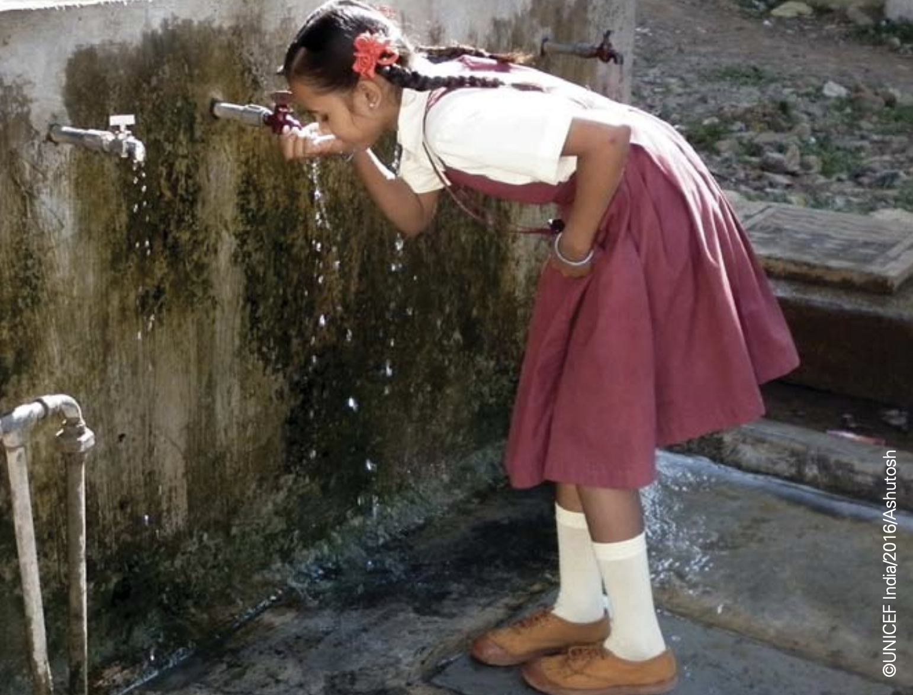এই সমস্যা সমাধানের জন্য, স্কুলগুলি বিভিন্ন স্তরে পানির ট্যাপ স্থাপন করতে পারে যাতে প্রত্যেক ছাত্র-ছাত্রী পানি পায়। পানি ছিটকে পড়ে পিছল জায়গা তৈরি হওয়া থেকে বাঁচানো গুরুত্বপূর্ণ। এর জন্য স্কুলগুলির অতিরিক্ত পানি ধরার জন্য বেসিন স্থাপন করা উচিত।
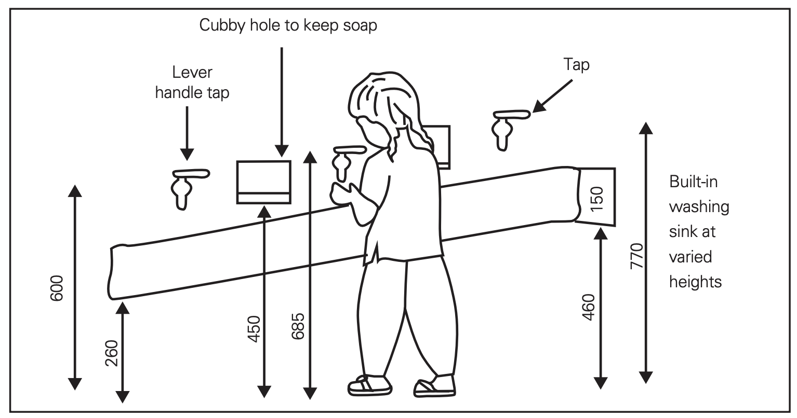